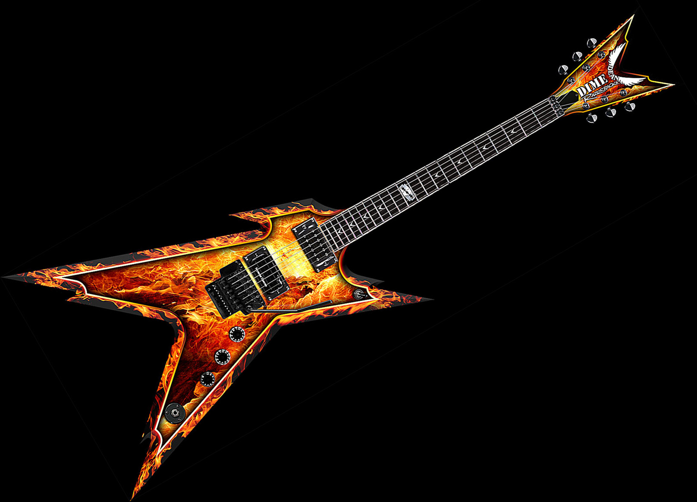

Never mind.
Well, I like this idea very much, so I'm going to give it a shot.
Artist Commentary of the Third Kind by Ryzor
1: Pleasure in Pain
I made this level specifically because I hadn't made a race in quite some time, and felt it was the time to pick it up again. However, I looked at the races that were being done prior to my making this map and saw a kind of uniformity--nothing really set apart one from the other (speaking of course of the ones that actually had flow and were aethetically pleasing). So I decided, after making the first few turns, to only use 5, 6, 7 and E tiles in the making of the map. I tried to give it as much flow as humanly possible, while staying within the parameters I had set for myself. I also tried to be original with the enemies, but that was very tough...probably my favorite one was the gauss in the far right of the map.
2: Pitch-Black Progress
This map was made very quickly...it was completed and submitted after only 10 minutes of work. I wanted to add an element of simplicity to it, while keeping it fast-paced and fun, so I took those factors to mind when I made it. I used only 6 and E tiles, and made it fast and easy. I kept the enemies sparse but well placed, and used only the gausses to further the simplistic vibes the map was emenating.
3: Contagion
Fusion of two types of levels into one can be tough, and I've seen it done very well. So here I decided to do my own. It's essentially half action, half mine-jumper. The first part is fairly fast paced, but I didn't want it to exactly whiz by so I made certain parts require patience and delicate moves (i.e. the one-way with the mine at the bottom and the floorguards on regular doors). Then comes the jumper portion. There are a few enemies interspersed, but for the most part its you and the mines. As always, I made it artsy and slapped a fitting title on it (since I thought it looked like some tentacled (!) lifeform growing from a mechanical thing, I gave it the name contagion...).
4: Razorback
I've always wanted to do my guitar on NED (photo here) so I made some tiles that looked vaguely like it. But I figured that wasnt enough, so I surrounded the outline with more tiles in the style of flames (which were pretty damn hard to do with tiles, I might add!). But even then I decided that I wasnt done. So, true to my style, I inserted a red to yellow gradient (not the best, but it's large and therefore sufficient) inside the guitar outline. And there was a tribute to my guitar, the most smokin' metal monster out there. The hardest part, though, was working out the slopes of the guitar into tiles. Eventually I got it though.
5: Uzbek Dreams
I really decided to go off of the beaten path for this one. There are no tiles used (for me thats pretty much huge). I wanted to see AGD's for this (and still haven't) so I left it open, with various paths and techniques to try. It's not my favorite, but I really went outside of my normal boundaries by making it. It's a pretty challening map, too.
6: Boneyard
This map was really inspired by one of in_dub's tilesets (surpressed nature). I saw the cautionary-looking slanted patterns and decided that I had to incorporate them into my map. So, I started playing around with tiles and came up with this wierd crane thing. It looked like a crane you might see at a junkyard, so I continued the theme and ended up with a pretty open, fun map. I liked how it all seemed to fit with the tiles--the gameplay reflected them.
7: Puritanical Misanthropic Euphoria
I really like this map. I tried to be original with it, especially in gold placement (which is all on the corners of tiles). Maps like these have always been my favorite, and I really modeled it after alot of the best maps like it. The drones are pretty lax, but if you're caught in the wrong place at the wrong time, you're pretty much cooked. It switches between being open and confined as well, which I also like.
8: Own3d.
Here's a tileset that I had alot of fun making. Originally, it was just the teeth (I was experimenting with the formation of a 4 tile on the back of a 6-2 configuration, if that's understandable) but I made the dragon around it. Ever the pyro, I also experimented with different styles of flames to have seething forth from its maw, and decided on the style I used because it looked like it had the most velocity. But when I was all done with the dragon, the map still looked empty. Hence, the Castle of Own3d.
9: Hit the Floor
Next to survivals (and the obligatory test level) no jump races seem to be one of the rarest sorts of maps. This map was my attempt at one, and I like the way it turned out. I pulled out all the stops on propulsion (trapdoor, bounceblock, jumppad, thwump, etc.) while keeping it flowy. I really tried to do my best since there aren't many no-jump races, and it is actually pretty close to it.
10: The Physics of Fire
I modeled this level after a previous map (Step Up) that I did a while before this. I made this map one that has to be taken slowly. Unfortunately, it is cheatable, but other than that I love it. Placement is minimal but precise, and often times it had me hanging on the edge of my seat when I was playtesting it. I really tried to give every object a purpose, to make it seem like it was supposed to be there. One of my favorites to this day.
Artist Commentary of the Third Kind by Ryzor
1: Pleasure in Pain
I made this level specifically because I hadn't made a race in quite some time, and felt it was the time to pick it up again. However, I looked at the races that were being done prior to my making this map and saw a kind of uniformity--nothing really set apart one from the other (speaking of course of the ones that actually had flow and were aethetically pleasing). So I decided, after making the first few turns, to only use 5, 6, 7 and E tiles in the making of the map. I tried to give it as much flow as humanly possible, while staying within the parameters I had set for myself. I also tried to be original with the enemies, but that was very tough...probably my favorite one was the gauss in the far right of the map.
2: Pitch-Black Progress
This map was made very quickly...it was completed and submitted after only 10 minutes of work. I wanted to add an element of simplicity to it, while keeping it fast-paced and fun, so I took those factors to mind when I made it. I used only 6 and E tiles, and made it fast and easy. I kept the enemies sparse but well placed, and used only the gausses to further the simplistic vibes the map was emenating.
3: Contagion
Fusion of two types of levels into one can be tough, and I've seen it done very well. So here I decided to do my own. It's essentially half action, half mine-jumper. The first part is fairly fast paced, but I didn't want it to exactly whiz by so I made certain parts require patience and delicate moves (i.e. the one-way with the mine at the bottom and the floorguards on regular doors). Then comes the jumper portion. There are a few enemies interspersed, but for the most part its you and the mines. As always, I made it artsy and slapped a fitting title on it (since I thought it looked like some tentacled (!) lifeform growing from a mechanical thing, I gave it the name contagion...).
4: Razorback
I've always wanted to do my guitar on NED (photo here) so I made some tiles that looked vaguely like it. But I figured that wasnt enough, so I surrounded the outline with more tiles in the style of flames (which were pretty damn hard to do with tiles, I might add!). But even then I decided that I wasnt done. So, true to my style, I inserted a red to yellow gradient (not the best, but it's large and therefore sufficient) inside the guitar outline. And there was a tribute to my guitar, the most smokin' metal monster out there. The hardest part, though, was working out the slopes of the guitar into tiles. Eventually I got it though.

5: Uzbek Dreams
I really decided to go off of the beaten path for this one. There are no tiles used (for me thats pretty much huge). I wanted to see AGD's for this (and still haven't) so I left it open, with various paths and techniques to try. It's not my favorite, but I really went outside of my normal boundaries by making it. It's a pretty challening map, too.
6: Boneyard
This map was really inspired by one of in_dub's tilesets (surpressed nature). I saw the cautionary-looking slanted patterns and decided that I had to incorporate them into my map. So, I started playing around with tiles and came up with this wierd crane thing. It looked like a crane you might see at a junkyard, so I continued the theme and ended up with a pretty open, fun map. I liked how it all seemed to fit with the tiles--the gameplay reflected them.
7: Puritanical Misanthropic Euphoria
I really like this map. I tried to be original with it, especially in gold placement (which is all on the corners of tiles). Maps like these have always been my favorite, and I really modeled it after alot of the best maps like it. The drones are pretty lax, but if you're caught in the wrong place at the wrong time, you're pretty much cooked. It switches between being open and confined as well, which I also like.
8: Own3d.
Here's a tileset that I had alot of fun making. Originally, it was just the teeth (I was experimenting with the formation of a 4 tile on the back of a 6-2 configuration, if that's understandable) but I made the dragon around it. Ever the pyro, I also experimented with different styles of flames to have seething forth from its maw, and decided on the style I used because it looked like it had the most velocity. But when I was all done with the dragon, the map still looked empty. Hence, the Castle of Own3d.
9: Hit the Floor
Next to survivals (and the obligatory test level) no jump races seem to be one of the rarest sorts of maps. This map was my attempt at one, and I like the way it turned out. I pulled out all the stops on propulsion (trapdoor, bounceblock, jumppad, thwump, etc.) while keeping it flowy. I really tried to do my best since there aren't many no-jump races, and it is actually pretty close to it.
10: The Physics of Fire
I modeled this level after a previous map (Step Up) that I did a while before this. I made this map one that has to be taken slowly. Unfortunately, it is cheatable, but other than that I love it. Placement is minimal but precise, and often times it had me hanging on the edge of my seat when I was playtesting it. I really tried to give every object a purpose, to make it seem like it was supposed to be there. One of my favorites to this day.
This poll is lacking. There are a lot of people that do good N-arts. And besides, voting for a favorite is like comparing italian and indian food (for me at least)...they both rule but theyre really different.
That being said, Cossack should be on this list.
That being said, Cossack should be on this list.
I only ever get sniped when one of my maps ends up on the top rated list. So thats not a personal sniper, per-se...its a rather different breed. They just try to knock down the stuff that has potential...theyre specific. like a piece of pie with corn in it, as opposed to all fecal matter, regardless of shape or coloration.
Mind your language outside B&T, please.
- Atilla
Mind your language outside B&T, please.
- Atilla
I agree all the way with you man. Most comments are like that too nowadays, unfortunately. If a map is good, its simply "good!" and if its not so good in someone'e opinion, its simply "not the best". Theres no motivation or incentive to elaborate on comments or map descriptions, which is why I think something seriously needs to be done with the rating/commenting system on NUMA. But, as always, its an issue that has many layers, and must be carefully dissected and analyzed as such. The best I can come up with is a rather complex template, which people would choose not to follow. Difficult.
But if you're reading this, comment better, damnit!
But if you're reading this, comment better, damnit!
35%
<2c>
I think that a very slight change of skin is in order. The trick is to make it subtle. A splash of color here and there would be good, but not enough to be distracting. A web page should be functional and easily navigable above all else. However, the current skin is a bit trite. Simplicity is good, but only to a certain extent. Even so, the skin on NUMA right now is decent. The layout is functional and should not be changed. Any changes made should be subtle, but not overly flashy. Flashy is for map thumbnails; the background should be easy on the eyes and unobtrusive. Just a few tweaks would do it for me.
</2c>
I think that a very slight change of skin is in order. The trick is to make it subtle. A splash of color here and there would be good, but not enough to be distracting. A web page should be functional and easily navigable above all else. However, the current skin is a bit trite. Simplicity is good, but only to a certain extent. Even so, the skin on NUMA right now is decent. The layout is functional and should not be changed. Any changes made should be subtle, but not overly flashy. Flashy is for map thumbnails; the background should be easy on the eyes and unobtrusive. Just a few tweaks would do it for me.
</2c>
This.
http://numa.notdot.net/map/85272
It's absolutely horrible...a race that requires you to slow down, an I used (almost exclusively) 2/8/3 curves. What a nub.
http://numa.notdot.net/map/85272
It's absolutely horrible...a race that requires you to slow down, an I used (almost exclusively) 2/8/3 curves. What a nub.
Personally, I dont care what people post. I myself contribute various vulgarities when I feel they are in order. There's no point in trying to stop the desensitization of modern culture to profanity. Numa, as people before me have stated, is not suited for family. Anyone who is still offended by curse words is, in my opinion, in denial. The course of human nature dictates that we are self-destructive beings, both to our bodies and our social structures. The entirety of the human race won't suddenly reconcile their atrocious behavior and habits, so there is simply no use in complaining about it. The status quo is at a state lower than it has ever been (take a look at the T.V. once in a while), and it will only continue in its decline. Of course, you still have the choice not to use vulgarities, but to chastise and restrict those who would seek to employ them is simply unrealistic.
However, there are websites that are heavily moderated in the crudeness department...such as Club Penguin...
However, there are websites that are heavily moderated in the crudeness department...such as Club Penguin...
Sure, the world would be better off without profanity. However, that wont happen. We haven't improved in the past, and there is absolutely no reason to believe that we can. I'm neither pessimistic nor optimistic. I'm a realist. Like I said, it's a personal endeavor. You can choose to be a staunch defender of the pure ways, but I will not...my general cynicism causes me to believe that there is no use trying to correct that which is incorrigible. If it makes you feel good to do so then, by all means, continue. I'm just saying that it's futile and will accomplish nothing, so we shouldn't try and impose further restrictions.
As an aside, the current status of NUMA is agreeable. If and when people like lumpythecamel come along, they should be banned. Profanity is acceptible to me, but not at the proportions that people like him utilised it to...we're not quite THAT far gone yet. It's best to provide freedom of choice and simply ban the idiots.
As an aside, the current status of NUMA is agreeable. If and when people like lumpythecamel come along, they should be banned. Profanity is acceptible to me, but not at the proportions that people like him utilised it to...we're not quite THAT far gone yet. It's best to provide freedom of choice and simply ban the idiots.
Our culture surfs the internet. A portion of people on the internet utilise this site. Therefore, I would say that this website is a pretty good representative sample of culture. (Ill explain that contention if you really, really want me to).
However, I am all for a client side profanity filter. It works on WoW, and I see no reason why it shouldn't here. Just dont try to impose restrictions on everyone...as I have iterated and reiterated, it's futile.
EDIT: LittleViking's solution seems to be reasonable, even if some of the words on his list are a bit "out there"...
However, I am all for a client side profanity filter. It works on WoW, and I see no reason why it shouldn't here. Just dont try to impose restrictions on everyone...as I have iterated and reiterated, it's futile.
EDIT: LittleViking's solution seems to be reasonable, even if some of the words on his list are a bit "out there"...
Yeah turtle, you tend to do that.  but you're a critic at heart, and we need people like you and ole' Simon to be there to balance out all the moron Paula Abduls out there.
but you're a critic at heart, and we need people like you and ole' Simon to be there to balance out all the moron Paula Abduls out there.
However, I've become indifferent to snipers. I've never sniped a map. I rate things what they deserve, and if it deserves a 0, a 0 it will get.
but you're a critic at heart, and we need people like you and ole' Simon to be there to balance out all the moron Paula Abduls out there.However, I've become indifferent to snipers. I've never sniped a map. I rate things what they deserve, and if it deserves a 0, a 0 it will get.
It's the individual that chooses to be indifferent to ratings. I'm still on the rating jag a little bit, I must admit, but I no longer care about snipers. However, imposing general restrictions, such as the abolition of the rating system, is not personal. That's blanket policy. Not caring about ratings is a matter of personal maturity, and if you dont have it, that's no sufficient reason to destroy the source of your discontent. Simply ignore them if you don't like them.
119977
115522
103900
99977
Nah, nothing really special. The only momentous one I can think of is 100000. The others are of no consequence.
115522
103900
99977
Nah, nothing really special. The only momentous one I can think of is 100000. The others are of no consequence.
Yeah, this is why I haven't been on much lately. I've been making these 30 levels for you.
Now, keep in mind that I wanted this (like the actual game) to start easy and get progressively harder, yet remain open-ended for playing. Therefore I have included all 30 maps in a list fashion, which (if you so choose) can be copied and pasted into your userlevels.
Play and comment at your leasure...hope you enjoy it. Tell me what your favorite levels are and Ill try to stylize my future maps in the fashion in which the most popular maps were made.
Now, keep in mind that I wanted this (like the actual game) to start easy and get progressively harder, yet remain open-ended for playing. Therefore I have included all 30 maps in a list fashion, which (if you so choose) can be copied and pasted into your userlevels.
Play and comment at your leasure...hope you enjoy it. Tell me what your favorite levels are and Ill try to stylize my future maps in the fashion in which the most popular maps were made.
10 downloads and no one has deigned to so much as post a comment. Typical numa.
Msyjsm...I very much appreciate your comment man. I just wish there were more people like you on NUMA. I might be permanently removing myself from NUMA soon, but I am glad you liked them so much, and took the time to comment.
My only beef with the newly added "Delist" function is in the resubmission of maps. There are two main reasons for resubmitting, as I see it: 1: your map did not get any attention (that is why we post maps on NUMA, after all) or, 2: because the map has become rated and there is something that you need to change. I do not suggest the removal of the delist function; I only suggest a small modification. Currently, to resub a map, you must delist the old one, add at least 1 new object, then sumbit a new one. It can get cluttered having two of the same map on your account. So here's what I propose: the option to resubmit. The resubmit option would ideally present you with a map submission template which you could edit, except for the level data. Upon confirmation of the submission, the pre-existing map would be removed from existence. Not only does this make the whole process easier, it clears the space on the servers that would have otherwise been occupied by duplicate maps. Of course, I'm no programmer, and I dont have a clue as to how difficult such a modification would be, but I'm just putting my two cents out there.
Simply a suggestion.
Simply a suggestion.
If you worked on a map for 2 hours and you submit it and it gets 0 comments/rates, wouldn't you be slightly miffed? Like I said, people post on NUMA to have their shit SEEN. If you didnt want that you could just put all your levels in userlevels and forget about NUMA.
I give up, because I realize that apathy is rampant on NUMA. I suppose if your map doesnt get rated or commented the first time then it isnt always worth resubmitting, but when I put 2+ hours of my time into a map and submit it to a site thats PURPOSE is to review, I naturally want to see some reviews. I realize that I cant change the fact that most people on NUMA are so self absorbed that they never even look at the newest page, so I'm ending my stance on this argument here. I suppose, as AMomentLikeThis said, the best thing is to grin and bear it...but still, no one can deny that it's annoying. If you think about it, NUMA is like an art gallery. If you pour your time into making a work of art and putting it on display and other people just come to the gallery doing the same thing but not bothering to walk around and look at other people's art, its naturally aggravating. But it cant be helped when people want only to be seen and not to see. So I'm done with this argument. I cant propose to change human nature.
@ Topolord: I gave in because I saw that I was wasting my time arguing with contentions like that.
If one's ears are deaf to opinions other than their own, there is no way to make them hear.
If one's ears are deaf to opinions other than their own, there is no way to make them hear.
For most mapmakers, feedback is the main thing we submit maps for. I like to hear what people have to say. Lets say you're at that art gallery exhibiting your works, and spectators simply walk by your with blank stares on their face. Sure, they thought it looked pretty, but why? I just like to have people discuss why they like/dont like my maps...what you're saying is one step below those comments that simply say "It's fun". Thats like someone saying to an artist "It's paint on canvas".
I'd be honored if you did one for me. I'll leave the stylistic details to you
This can all be remedied client-side, without over-complicating the site. If you think you're at risk of being hacked, then put all your levels in a text file on your drive.
That aside, if a timer were added to NUMA on the deletion of maps, it should be one akin to the old map submission limits...i.e. delete one or two maps every 12 hours, to safeguard against malicious hacking...I mean, what sort of three-pubed two-bit pre-pubescent hacker is going to have the determination to log onto your account every 12 hours to delete 2 of your maps. Leastways, the timer should not be cancelable or viewable by anyone other than yourself...the old deletion function only asked you once; theres no need to give further room for decision for a simple yes or no situation.
And as to TribulatioN's message, I think he was trying to say "if you're going to kill yourself, dont be a pussy about it; just pull the trigger already!"
JK, ofc...
Once more, just adding my 2c, which of course will be heavily opposed by some and more eloquently and cleanly restated by others.
That aside, if a timer were added to NUMA on the deletion of maps, it should be one akin to the old map submission limits...i.e. delete one or two maps every 12 hours, to safeguard against malicious hacking...I mean, what sort of three-pubed two-bit pre-pubescent hacker is going to have the determination to log onto your account every 12 hours to delete 2 of your maps. Leastways, the timer should not be cancelable or viewable by anyone other than yourself...the old deletion function only asked you once; theres no need to give further room for decision for a simple yes or no situation.
And as to TribulatioN's message, I think he was trying to say "if you're going to kill yourself, dont be a pussy about it; just pull the trigger already!"
JK, ofc...
Once more, just adding my 2c, which of course will be heavily opposed by some and more eloquently and cleanly restated by others.
Yeah the only issues are as follows (though there are probably more that I will not mention as I am sitting here stupified):
-Desire to keep personal account listings "clean"
-To clear up server space (because people will inevitably resubmit and you'll just be ending up with duplicate maps (+ / - one object) all over the place)
-To resubmit maps more cleanly (again, let me reiterate: It is NOT attention seeking behavior...that is classified as things like advertising on other people's maps and spamming)
-The wish to completely remove a map from the view of the public.
That's all I can think about right now. But please, have mercy. I have, to quote Nathan Explosion of Dethklok...a 'motherf***ing eye-gouging c***sucking motherf***ing a**hole SUMMER COLD!'
-Desire to keep personal account listings "clean"
-To clear up server space (because people will inevitably resubmit and you'll just be ending up with duplicate maps (+ / - one object) all over the place)
-To resubmit maps more cleanly (again, let me reiterate: It is NOT attention seeking behavior...that is classified as things like advertising on other people's maps and spamming)
-The wish to completely remove a map from the view of the public.
That's all I can think about right now. But please, have mercy. I have, to quote Nathan Explosion of Dethklok...a 'motherf***ing eye-gouging c***sucking motherf***ing a**hole SUMMER COLD!'
High school is balls. At least where I live. I'll be off to college this fall. I toured the campus earlier this year and found that ONE BUILDING had everything there is to do in my town inside it, and more. Besides that, I've just heard so much about college that I'm sure it's gonna be a better experience than high school. I also had to go to a 2 day orientation, which, despite its repetative droning nature, still managed to be extremely fun. It's almost always a new experience (unless you go to community college).
Personally, after knowing all the people at my school for ~12 years, I have come to hate about 80% of them. Thrown into a new crowd, I'd expected that I'd be just as cynical and hateful of people as ever, but was pleasantly surprised to find that I was not. College can be like a reset button for your life....like Ninja143 said, she wasnt popular in HS and has a whole new set of friends in college. This is because in college, cliques and shit like that do not exist. When there are 25000+ kids (typical numbers) at a school, you're just another face, and social hierarchy disappears. In order for social hierarchy to exist, the group must either be very small, or very large and thoroughly connected to a central media. In college, thankfully, neither of these situations is present.
And I would recommend, for those entering college, to stay in the dorms. I have personally heard that it is better for a person to fully immerse themselves in campus life rather than remain too heavily tied to their earlier life.
Personally, after knowing all the people at my school for ~12 years, I have come to hate about 80% of them. Thrown into a new crowd, I'd expected that I'd be just as cynical and hateful of people as ever, but was pleasantly surprised to find that I was not. College can be like a reset button for your life....like Ninja143 said, she wasnt popular in HS and has a whole new set of friends in college. This is because in college, cliques and shit like that do not exist. When there are 25000+ kids (typical numbers) at a school, you're just another face, and social hierarchy disappears. In order for social hierarchy to exist, the group must either be very small, or very large and thoroughly connected to a central media. In college, thankfully, neither of these situations is present.
And I would recommend, for those entering college, to stay in the dorms. I have personally heard that it is better for a person to fully immerse themselves in campus life rather than remain too heavily tied to their earlier life.
I was in France a month ago, it was 1.59 euros/liter in the parisian suburbs...who knows how much it was in the city, I wasnt really paying attention to gas prices when I was there.
And in New Mexico, the proverbial armpit of the US, gas is $3.85 in small towns and $4.something in big towns. Diesel is at $4.75. My dad always laughs at that because he remembers in the 90s when diesel was cheap and everyone was ranting and raving about it...well guess what?
And in New Mexico, the proverbial armpit of the US, gas is $3.85 in small towns and $4.something in big towns. Diesel is at $4.75. My dad always laughs at that because he remembers in the 90s when diesel was cheap and everyone was ranting and raving about it...well guess what?
It's funny, I found myself believing the ones about depression and suicide, but not the ones about sexual experiences. Also some of them sounded like something you might see on a tee-shirt (case in point: "I married my wife to win a $100 bet"). Some were sad, and if they're true, then I do feel sorrow for them; however, being an eternal skeptic, I believe at least half of these to be false. But hey, I'm a judgmental dick, so, you know...
Keep in mind that not only is this the INTERNET (the most lie-permeated thing on the face of this planet), but it is also completely anonymous. That, in combination with my pre-existing cynicism and skepticism, throws my mind into doubt.
And besides that, people just like to read this kind of stuff. For instance, look at the popularity of things like National Enquirer...you may think to yourself, who cares about Brangelina anyways? People still buy it.
Still, always open to the possibility against reasonable suspicion, I do respect that most/all of these COULD be true...however, it is extremely doubtful that they are. Sorry to rain on your parade, but I'm seriously inclined not to like things like this. They contribute to the general degradation of modern culture.
Keep in mind that not only is this the INTERNET (the most lie-permeated thing on the face of this planet), but it is also completely anonymous. That, in combination with my pre-existing cynicism and skepticism, throws my mind into doubt.
And besides that, people just like to read this kind of stuff. For instance, look at the popularity of things like National Enquirer...you may think to yourself, who cares about Brangelina anyways? People still buy it.
Still, always open to the possibility against reasonable suspicion, I do respect that most/all of these COULD be true...however, it is extremely doubtful that they are. Sorry to rain on your parade, but I'm seriously inclined not to like things like this. They contribute to the general degradation of modern culture.
I'm guessing from your use of the word "petrol" that you live in the UK or somewhere in Europe. In America, at least where I live, diesel surpassed the price of gas about 2 years ago. I don't leave my state often, so I don't know much about anywhere else, and Google has just failed me for a histogram of diesel prices.
But besides all that, my dad can be a bit vague at times And technically it was, as my dad mentioned, a 'craze' in the 90s to buy diesel vehicles.
And technically it was, as my dad mentioned, a 'craze' in the 90s to buy diesel vehicles.
But besides all that, my dad can be a bit vague at times
And technically it was, as my dad mentioned, a 'craze' in the 90s to buy diesel vehicles.Lego rules.
I got such a sense of reminiscence just reading this thread that I want to go build right now.
I was always partial to Technic Legos, and rarely used the classic blocks, though I have more of them. I remember my favorite things:
-Throwbots (precursor to Bionicle)
-Bionicle (only the first 2 sets, after that it became formulaic)
-Those purple/blue fighting bots that had the punching arms.
-The Bionicle Manas (basically remote control crabs that you drove around on treads and made punch each other)
-Almost all Technic legos.
-Any of the castle lego sets also held great appeal to me, i.e. the original castle set with the blue battlements and knights/king, and the *gasp* harry potter hogwarts castle.
My favorite thing to do was to either build original castles or make innovative configurations with technic/bionicle pieces. I wish I had a camera, I made the sickest bionicle guy ever, I might submit it later if I can manage to steal my dad's camera.
It's too bad that lego started pandering to the masses with crap like that lego anime shit they started releasing a couple years ago.
God, writing that got alot off my chest....
and @ Eternal_Moonlight...that looks like the standard set that you make with the instructions...it's be cooler if you had made your own but if it is your own, my apologies.
I got such a sense of reminiscence just reading this thread that I want to go build right now.
I was always partial to Technic Legos, and rarely used the classic blocks, though I have more of them. I remember my favorite things:
-Throwbots (precursor to Bionicle)
-Bionicle (only the first 2 sets, after that it became formulaic)
-Those purple/blue fighting bots that had the punching arms.
-The Bionicle Manas (basically remote control crabs that you drove around on treads and made punch each other)
-Almost all Technic legos.
-Any of the castle lego sets also held great appeal to me, i.e. the original castle set with the blue battlements and knights/king, and the *gasp* harry potter hogwarts castle.
My favorite thing to do was to either build original castles or make innovative configurations with technic/bionicle pieces. I wish I had a camera, I made the sickest bionicle guy ever, I might submit it later if I can manage to steal my dad's camera.
It's too bad that lego started pandering to the masses with crap like that lego anime shit they started releasing a couple years ago.
God, writing that got alot off my chest....
and @ Eternal_Moonlight...that looks like the standard set that you make with the instructions...it's be cooler if you had made your own
but if it is your own, my apologies.This is why google rocks. I copy+pasted that SOB into the google search field and came up with this:
http://www.mydigitallife.info/2007/11/27/w...y-google-error/
It does suck that google does that sometimes, but overall google is, for all intents and purposes, the best site on the internet.
Reading that should help.
Essentially whats going on is that google has temporarily banned your IP address. It does this because you or someone on your IP network is trying to access google at too fast a rate, and this could have possible malicious intent.
Basically, there are two solutions: wait 24 hours, or use a proxy server to bypass the ban (proxies are used for anonymous surfing).
However, I recommend waiting for the 24 hours to expire...proxies themselves can and often do contain viruses and other material potentially harmful to your PC.
http://www.mydigitallife.info/2007/11/27/w...y-google-error/
It does suck that google does that sometimes, but overall google is, for all intents and purposes, the best site on the internet.
Reading that should help.
Essentially whats going on is that google has temporarily banned your IP address. It does this because you or someone on your IP network is trying to access google at too fast a rate, and this could have possible malicious intent.
Basically, there are two solutions: wait 24 hours, or use a proxy server to bypass the ban (proxies are used for anonymous surfing).
However, I recommend waiting for the 24 hours to expire...proxies themselves can and often do contain viruses and other material potentially harmful to your PC.
Well, I'm with this and not with this at the same time. Here's a harms/benefits list.
BITESIZE:
BENEFITS:
-more maps per day could be bitesized
-Bitesized maps commonly seen by users were the most recent ones.
HARMS:
-Pointless, idiotic and/or trite maps could be bitesized due to who the author was or who the sizer was. (such as when one of Guisepi's maps containing one object was sized)
-Bitesizers could remain anonymous if they wished.
FEATURED:
BENEFITS:
-A wider variety of map types is featured
-Featured maps generally garner more attention than your typical bitesized map
HARMS:
-Old maps are often featured, thereby putting the spotlight on the past and partly preventing NUMA's evolution.
-The small group provides for a narrowed view on NUMA. making a small group of people responsible for what all members of the community will see promotes a faint sense of elitism, as well as taking deserving maps out of the spotlight.
-Featured maps are shoved down your throat, whereas one used to have to click a tab or search for bitesized maps.
Personally, I liked the bitesize system more, but it's up to you to weigh the benefits and harms on your own. Alot of this is based in personal preference, which, as you all should know, is pointless to argue about, as it is not a subject that can be empirically proven.
General opinion forms somewhat of a general qualitative bell curve relative to the number of people providing their individual opinions. With too few people, opinion will most likely be biased (as it currenly is towards old maps). However, with a moderate number of people active in their contributions, you will get a balanced general consensus. And finally, with too many people, there will be too much infighting, and one sind will end up taking over either by numbers or persuasion, and will again dominate the general opinion. (case in point: todays mainstream media).
BITESIZE:
BENEFITS:
-more maps per day could be bitesized
-Bitesized maps commonly seen by users were the most recent ones.
HARMS:
-Pointless, idiotic and/or trite maps could be bitesized due to who the author was or who the sizer was. (such as when one of Guisepi's maps containing one object was sized)
-Bitesizers could remain anonymous if they wished.
FEATURED:
BENEFITS:
-A wider variety of map types is featured
-Featured maps generally garner more attention than your typical bitesized map
HARMS:
-Old maps are often featured, thereby putting the spotlight on the past and partly preventing NUMA's evolution.
-The small group provides for a narrowed view on NUMA. making a small group of people responsible for what all members of the community will see promotes a faint sense of elitism, as well as taking deserving maps out of the spotlight.
-Featured maps are shoved down your throat, whereas one used to have to click a tab or search for bitesized maps.
Personally, I liked the bitesize system more, but it's up to you to weigh the benefits and harms on your own. Alot of this is based in personal preference, which, as you all should know, is pointless to argue about, as it is not a subject that can be empirically proven.
General opinion forms somewhat of a general qualitative bell curve relative to the number of people providing their individual opinions. With too few people, opinion will most likely be biased (as it currenly is towards old maps). However, with a moderate number of people active in their contributions, you will get a balanced general consensus. And finally, with too many people, there will be too much infighting, and one sind will end up taking over either by numbers or persuasion, and will again dominate the general opinion. (case in point: todays mainstream media).
Yeah it's pretty badly designed in comparison to most of Google's other stuff. They should have a way to determine whether it was your specific IP that was doing the high-speed pinging. But I suppose there aren't many complaints about it, as most people on the net simply accept what their computers give them (a mixed bag of good and bad...)
50%
Your presence on the forums increases it, as well as your name tilesets.
Wonder how much mine changed? I was 5% last time I posted here ^^
Your presence on the forums increases it, as well as your name tilesets.
Wonder how much mine changed? I was 5% last time I posted here ^^
An informed public and media (lol)
6/10 (original, but I heavily suspect that it is simply a stock animation from a stock image site)
8/10 I really like it.
I cant be bothered to make a new one...but I do own that guitar!
I cant be bothered to make a new one...but I do own that guitar!
Banned for daring to be a Spiderman fan after that horrible travesty that was Spiderman 3.
Shaft
Yeah, I just went there.
Yeah, I just went there.
A: I dont think that program allows you to use technic (correct me if I'm wrong) and
B: It's always more fun to build it by hand and think it out with the pieces you have available to you.
B: It's always more fun to build it by hand and think it out with the pieces you have available to you.
I'm currently using the GIMP, which works fine for me (I can achieve tons of desired effects with it), but I'm wondering if there is any other program out there that is better. So I'm using this post to plumb the depths of the net to find one.
If you post the name, could you please tell me why its so good? Thanks.
If you post the name, could you please tell me why its so good? Thanks.
8/10 because A: its nordic (icelandic, right?) and B: no one knows how to pronounce OR spell it.
Blackbriar (Bourne series top secret government agency)
While I agree with some of your points, AMLT, I disagree with others. I do agree that making a map for the image alone and telling people to rate for the image is rather idiotic...take it to DeviantArt or somewhere else. However, when combined with good gameplay, imagemaps can add a new experience or feeling to a map that would not be there without the picture.
Furthermore, most people who use nreality actually know what they're doing, be it with playermods or images. This is because NUMA is great for weeding out people without the perseverance to improve. Most people will make one imagemap, and if it recieves negative feedback, will not attempt to do so again. This creates a rather higher standard for maps using Nreality.
And besides all that, Nreality was, as I foresaw, a fad. While still in use, its popularity is lessened of late.
Furthermore, most people who use nreality actually know what they're doing, be it with playermods or images. This is because NUMA is great for weeding out people without the perseverance to improve. Most people will make one imagemap, and if it recieves negative feedback, will not attempt to do so again. This creates a rather higher standard for maps using Nreality.
And besides all that, Nreality was, as I foresaw, a fad. While still in use, its popularity is lessened of late.
Here are my thoughts on underage drinking.
It is a very dangerous practice, and there is no way to cut it off except through the slow indoctrination of children against it.
However, I did have an idea (probably not original, but hey...) to quell the drinking problem. Here it is.
Make beer, wine, and all other alcoholic beverages below 15% alcohol content legal to br purchased and drank at 18. However, keep hard liquor at 21. Making beer and wine accessible will somewhat lessen the demand by teens for hard liquor, the type of alcoholic beverage most commonly linked with fatalities.
Thats really all I have to say that hasn't already been said. Alcohol is a huge problem in my town, and my state was recently rated the #1 state in the nation for drunk driving fatalities. Personally, I believe, though I do not drink (though I have in the past), that alcohol in moderate quantities is a conversation driver...it generally makes talking and having fun easier in mild quantities. This is why everyone should keep in mind that drinking in moderation, if you are going to drink regardless, is better than dangerous binges.
It is a very dangerous practice, and there is no way to cut it off except through the slow indoctrination of children against it.
However, I did have an idea (probably not original, but hey...) to quell the drinking problem. Here it is.
Make beer, wine, and all other alcoholic beverages below 15% alcohol content legal to br purchased and drank at 18. However, keep hard liquor at 21. Making beer and wine accessible will somewhat lessen the demand by teens for hard liquor, the type of alcoholic beverage most commonly linked with fatalities.
Thats really all I have to say that hasn't already been said. Alcohol is a huge problem in my town, and my state was recently rated the #1 state in the nation for drunk driving fatalities. Personally, I believe, though I do not drink (though I have in the past), that alcohol in moderate quantities is a conversation driver...it generally makes talking and having fun easier in mild quantities. This is why everyone should keep in mind that drinking in moderation, if you are going to drink regardless, is better than dangerous binges.
*sigh*
Ok, time to take the proverbial deep breath before the plunge.
As soon as I saw this topic, the "OH NOES" light went on in my head.
The first thing we must realize about this is that none of this can be 100% proven. Science can account for 99.99%, but there is still that .01% chance that we scientists are wrong and all of us were put here by a higher power. This is why I am an agnostic. I do lean towards atheism, but not totally. I still allow that chance to exist.
Now, the scientist would say, look, we have billions of years of fossil records from stromatolites to neanderthals. There's your proof of evolution.
Here's where the religious person makes his rebuttal: But couldnt God have put all of that there to quench his creation's insatiable thirst for knowledge?
Scientist: There is no god.
Creationist: Prove it!
Scientist: I can't do that empirically.
Then, once we've passed all that mumbo-jumbo, theres the question of the existance of the universe and its nature, neither of which have been proven beyond reasonable doubt.
The creationist would say, well, who created the universe?
To which the scientist would reply, no one did, it's existence is infinate, and we cannot assume that there is a beginning or an end to time.
Creationist: But where did all the matter come from?
Scientist: We can only assume that all the matter in the universe has been present in some form for as long as time, or infinately.
Creationist: Can you prove that?
Scientist: No, it's only a theory.
Creationist: Exactly.
What I'm trying to get across is that there is absolutely no way to prove any of it 100% without allowing reasonable room for the what if questions.
Feel free to refute this, I didnt devote my full attention to it...I always do better when I have set points to write about rather than a whole topic.
Ok, time to take the proverbial deep breath before the plunge.
As soon as I saw this topic, the "OH NOES" light went on in my head.
The first thing we must realize about this is that none of this can be 100% proven. Science can account for 99.99%, but there is still that .01% chance that we scientists are wrong and all of us were put here by a higher power. This is why I am an agnostic. I do lean towards atheism, but not totally. I still allow that chance to exist.
Now, the scientist would say, look, we have billions of years of fossil records from stromatolites to neanderthals. There's your proof of evolution.
Here's where the religious person makes his rebuttal: But couldnt God have put all of that there to quench his creation's insatiable thirst for knowledge?
Scientist: There is no god.
Creationist: Prove it!
Scientist: I can't do that empirically.
Then, once we've passed all that mumbo-jumbo, theres the question of the existance of the universe and its nature, neither of which have been proven beyond reasonable doubt.
The creationist would say, well, who created the universe?
To which the scientist would reply, no one did, it's existence is infinate, and we cannot assume that there is a beginning or an end to time.
Creationist: But where did all the matter come from?
Scientist: We can only assume that all the matter in the universe has been present in some form for as long as time, or infinately.
Creationist: Can you prove that?
Scientist: No, it's only a theory.
Creationist: Exactly.
What I'm trying to get across is that there is absolutely no way to prove any of it 100% without allowing reasonable room for the what if questions.
Feel free to refute this, I didnt devote my full attention to it...I always do better when I have set points to write about rather than a whole topic.
I view religion as a system devised in the ancient world to organize the lives of regular citizens and to take the fear out of death. Most religions promise heaven or enlightenment for leading a righteous life, and damnation for leading an unwholesome, sinful life. I cannot get my head around this. If god created mankind, wouldnt that all powerful being know the fallibility of his own creation? He would not be justified in punishing his creations to which he imparted the flaw, as it was his own fault. If your neighbors dog is barking, do you scold the neighbor or the dog? It's much the same situation.
But, as I mentioned, the main purpose of religion is to take the fear out of death, an issue inherent to human nature. In my mind, religion was created to combat the chaos of the system of human nature, a condition that can be harmful to individuals and the collective species.
Many people cite "miracles" such as the bible to "prove" that religion is real. To that I say: what if the bible was simply a story meant to do what I previously mentioned?
My closing argument: There is no way to prove the existence or non-existence of a god or supreme power.
But, as I mentioned, the main purpose of religion is to take the fear out of death, an issue inherent to human nature. In my mind, religion was created to combat the chaos of the system of human nature, a condition that can be harmful to individuals and the collective species.
Many people cite "miracles" such as the bible to "prove" that religion is real. To that I say: what if the bible was simply a story meant to do what I previously mentioned?
My closing argument: There is no way to prove the existence or non-existence of a god or supreme power.
haha, gimpshop, I like that...sounds like a store you'd find in Amsterdam.
Anyways, thanks for the advice, I do agree that the GIMP is excellent and very close to photoshop (in some cases better, as photoshop's UI can sometimes be difficult to comprehend). And besides, the GIMP has that thing under XTNS--->Script Fu called "Logos" which is an excellent way to do very slick word art very efficiently, esp. if you're a font junkie like myself
Anyways, thanks for the advice, I do agree that the GIMP is excellent and very close to photoshop (in some cases better, as photoshop's UI can sometimes be difficult to comprehend). And besides, the GIMP has that thing under XTNS--->Script Fu called "Logos" which is an excellent way to do very slick word art very efficiently, esp. if you're a font junkie like myself
1: God of War
2: Jak 3
3: Ratchet & Clank 3
4: Jak II
5: R&C II
6: N
7: FFX
8: Ace Combat 4
9: WoW
10: Champions of Norrath
2: Jak 3
3: Ratchet & Clank 3
4: Jak II
5: R&C II
6: N
7: FFX
8: Ace Combat 4
9: WoW
10: Champions of Norrath
Much of your post about mine is true, player_03. However, going over what I said, I see that much of what I said can be contributed to colloquialisms and unthinking error (i.e. 'reasonable doubt' and my use of the term 'scientist', respectively).
As for my use of the word atheist, I was simply trying to explain myself...I recall hearing about a book wherein the term "99% atheist" was coined, but I cant think of its name.
As to my assertion that the universe's existence cannot be proven 100%, yes, I am using the fact that all theories and hypotheses we have on the subject are just that: theory. Theory, as we all know, is not proven.
And as to your last part, it is definately possible (dont drag this forum into the multiverse theory though ) but still unproven. It affirms my point.
As for my use of the word atheist, I was simply trying to explain myself...I recall hearing about a book wherein the term "99% atheist" was coined, but I cant think of its name.
As to my assertion that the universe's existence cannot be proven 100%, yes, I am using the fact that all theories and hypotheses we have on the subject are just that: theory. Theory, as we all know, is not proven.
And as to your last part, it is definately possible (dont drag this forum into the multiverse theory though
) but still unproven. It affirms my point.Yo Eiturlyf, have you tried the gimp at all? I'd like a comparison. I have heard that paint.net is ok, and some of the things you're able to do with it are cool, but I'd just like to compare them side by side.
I had a dream once that I was taking a piss, and then I'm shaken into conciousness by my dad yelling at me. When I woke up, I found that I had got out of bed, walked down the hall, dropped trou and was about to pee in the dryer.
I'm listening to this band I just found called Machinemade God. They are absolutely awesome, their guitars are incredible. Song name: Place Taken. Awesome breakdown style riffs, and a great solo to accompany it.
N-art, as those before me have mentioned, is a different medium than programs such as paint and photoshop. Think of it as an optimization problem. Much like tilesets, you dont have many pieces/objects to use to create your image, so you must be innovative with your placement, patterns, colors and blends.
N-art on NUMA has been (thankfully) fixed, with the addition of the hot maps tab and the removal of the adamant, non-dynamic Top Rated page. Still, N-art gets alot of attention from NUMA users (in my experience) even after the nemMA upgrade.
Art takes more than time to accomplish, which is all that some people attribute to it.
N-art on NUMA has been (thankfully) fixed, with the addition of the hot maps tab and the removal of the adamant, non-dynamic Top Rated page. Still, N-art gets alot of attention from NUMA users (in my experience) even after the nemMA upgrade.
Art takes more than time to accomplish, which is all that some people attribute to it.
When I spoke (or typed) of existence, what I really meant to say was the *infinite* existence of matter, or the origins of the universe (not the big bang, but the question of where it all came from in the first place. Guess I should have worded that better.
And a fact would be that the sky is blue, or the grass is green...are those falsifiable, parsimonious statements?
While the usage may be different, it still stands, in a colloquial sense, as something that has not been 100% proven. In a literal sense, it is something that cannot be 100% empirically proven.
And a fact would be that the sky is blue, or the grass is green...are those falsifiable, parsimonious statements?
While the usage may be different, it still stands, in a colloquial sense, as something that has not been 100% proven. In a literal sense, it is something that cannot be 100% empirically proven.
Dude...I had an unhealthy level of obsession with God of War, so heres what I did (shortly after release, a few years ago). I took an old hardwood cutting board (3/4 inch thick) and split it into 2 pieces that were roughly 5" wide by 1' long. Then I used a saw to cut out the design of the Blades of Chaos into each one, and used my knife to carve and edge into both of them (hardwood, mind you). Then I wrapped the handles in twine and spray painted the blades silver. After all that, I went to a local junkyard ang bought 20' of chain. I attached the "blades" to my 2 10' lengths and wrapped that shit halfway around my arms and spun those things around like a jackoff for hours.
But for the most part, when I imitate something, I prefer voices from movies and television (i.e. Meatwad, Dr. Evil, Fat Bastard, Dubya, etc...) and also just doing accents (Australian the really accent croc hunter kind), British, Russian, Irish, Scottish, etc...)
This forum keeps bringing out the dork within...no fair.
But for the most part, when I imitate something, I prefer voices from movies and television (i.e. Meatwad, Dr. Evil, Fat Bastard, Dubya, etc...) and also just doing accents (Australian the really accent croc hunter kind), British, Russian, Irish, Scottish, etc...)
This forum keeps bringing out the dork within...no fair.
see above post. I explained my rather lacking previous explanation.
Scientist was a bad term, change that in your mind to "Agnostic Evolutionist" if you want...
Scientist was a bad term, change that in your mind to "Agnostic Evolutionist" if you want...
Ummmm, interesting...?
7/10. I cant even think about burgers ATM....
7/10. I cant even think about burgers ATM....
You've stumped me!
Um, a revolution.
Um, a revolution.
Eiturlyf...post one next time!
Would you rather lose your sense of smell or your sense of taste?
Would you rather lose your sense of smell or your sense of taste?
Because its Lord of the Rings.
Buy a dozen donuts, eat 11 of them, and save one for tomorrow
Buy a dozen donuts, eat 11 of them, and save one for tomorrow
*Puts on a respirator and gets out the Lysol*
House, hell yeah!
Would you rather have a swimming pool filled with jello or pudding?
Would you rather have a swimming pool filled with jello or pudding?
Because it has squares in the background!
Drinking a 12er of Diet Dr. Pepper in one day
Drinking a 12er of Diet Dr. Pepper in one day
GAH!
A black HOLE!
A black HOLE!
Thanks Eiturlyf, done in THE GIMP!!!1!1one! *maniacal laughter*
Rating Techno's sig b/c I've already done the last 2.
6/10, good game, rather sloppy looking though.
Rating Techno's sig b/c I've already done the last 2.
6/10, good game, rather sloppy looking though.
An alien white government?'
No, seriously, hmmm....An alien virus that destroys the entire alien black government.
No, seriously, hmmm....An alien virus that destroys the entire alien black government.
Because it's decent.
Reading about Nihilism
Reading about Nihilism
Granted, but it's the pie that the suicide cult you just joined ate
I wish I had a life size statue of paris hilton with a shovel handle through her head (House of Wax, view at your own risk: http://i39.photobucket.com/albums/e194/ang...ouseofwax26.jpg ).
I wish I had a life size statue of paris hilton with a shovel handle through her head (House of Wax, view at your own risk: http://i39.photobucket.com/albums/e194/ang...ouseofwax26.jpg ).

Because you're in a padded cell.
Gouging your eyes out.
Gouging your eyes out.
*Simultaneously surprised and disturbed that Sniperwhere is simultaneously surprised and disturbed that this game is still alive especially considering it was started before he joined...whew, that was a mouthful even in THOUGHT form!*
Raze
A massive worldwide mold-plague that kills all corn.
I'm also in.
 Tilesets.
Tilesets.
Tilesets.
maybe we should restart this in the absence of Skyline. I can do it if no one else wants to, and compile them into a solid image.
Granted, but as soon as he stops your hard drive explodes.
I wish that I had more money on my Itunes account.
I wish that I had more money on my Itunes account.
Um, granted, but everyone who's into it creates a curse that instantly kills them all?
I wish this band Sybreed had a better vocalist...
I wish this band Sybreed had a better vocalist...
71%
Granted. However, being stolen and sponaneously combusting after a red-light are two different things, and you're very unlucky.
I wish for another finger on my left hand.
I wish for another finger on my left hand.
Granted, but it's the skullcap they put on you when you're in the electric chair.
I wish for a swimming pool filled with slightly minty chocolate.
I wish for a swimming pool filled with slightly minty chocolate.
Granted, but.....hmmm.....uhhhh....he gets assassinated by a delusional, rhetoric-spewing Al Gore.
I wish for an unbreakable Jackson RR1.
I wish for an unbreakable Jackson RR1.
Granted, but with your exponential increase in server load, the machine containing the data for your website is destroyed.
I wish I could slap Paris Hilton in the face. (how can you deny that one?)
I wish I could slap Paris Hilton in the face. (how can you deny that one?)
A bucket of soapy water and a pumpkin pie.
Granted, but the site is permanently terminated one day later.
I wish I was a god.
I wish I was a god.
Granted; its poison apple pie.
I wish for more guitar picks ><
I wish for more guitar picks ><
The vacuum of space.
No, I'm replying to a quantum physics inquiry on a science board.
What does chicken taste like?
What does chicken taste like?
A rafflesia flower.
Look it up.
Look it up.
Three out of four people comprise 75% of the worlds population.
Iceland has comedians.
Doritos.You taste like nitroglycerine, diatomaceous earth and sodium carbonate.
It's his name.
Who the hell IS Dr. Pepper, anyways?
Who the hell IS Dr. Pepper, anyways?
Skeet Skeet.
James Earl Jones.
Why is glue sticky?
Why is glue sticky?
I enjoy doing sketches in my spare time, so I thought I'd post a few that I did. Every sketch I do is done on printer paper with a ballpoint pen. They are then scanned onto my computer via a piece of $#*% HP scanner and resized/cropped in the GIMP.
8/5/08
 No shading on this one. I had an awesome charcoal one but it's lost in my disaster area of a room.
No shading on this one. I had an awesome charcoal one but it's lost in my disaster area of a room.
 It's a spin-off of my favorite gun, the Barret M-107. Also my first venture into cross-hatch shading.
It's a spin-off of my favorite gun, the Barret M-107. Also my first venture into cross-hatch shading.
 Typical Ryzor, I know.
Typical Ryzor, I know.
 Just an idea I had.
Just an idea I had.
 I am going to build this at some point (I've got the actual design specs somewhere)
I am going to build this at some point (I've got the actual design specs somewhere)
 I like to kid myself by telling myself I can draw faces. I cant, really.
I like to kid myself by telling myself I can draw faces. I cant, really.
8/6/08
 Heres the charcoal version. I found it under a pile of socks and guitar picks.
Heres the charcoal version. I found it under a pile of socks and guitar picks.
 I like how this one looks...I'd say its the best katana I've ever drawn. The kanji on the sheath is supposed to say Grace / Rage, but who knows.
I like how this one looks...I'd say its the best katana I've ever drawn. The kanji on the sheath is supposed to say Grace / Rage, but who knows.
 I did this terribly anatomically deformed dude about 6 years ago (I was 12 at the time). Just thought I'd include him because he was also under the pile of socks.
I did this terribly anatomically deformed dude about 6 years ago (I was 12 at the time). Just thought I'd include him because he was also under the pile of socks.
8/8/08
 I'm pretty proud of this one. Drawn in pencil, then inked. Scanned in, colored in the GIMP.
I'm pretty proud of this one. Drawn in pencil, then inked. Scanned in, colored in the GIMP.
 Created in the same way as my previous art, but this one's subject matter is a bit less serious...
Created in the same way as my previous art, but this one's subject matter is a bit less serious...
More to come, enjoy. Lemme know what you think.
8/5/08
Spoiler: Blades of Chaos
Spoiler: Sniper Rifle
Spoiler: Skull
Spoiler: Mechanical Arm
Spoiler: Guitar Design
Spoiler: Random Face
8/6/08
Spoiler: Blade of Chaos (charcoal)
Spoiler: Katana
Spoiler: Armored Guy
8/8/08
Spoiler: Armored Future-Soldier
Spoiler: Aqua Teen Hunger Force!
More to come, enjoy. Lemme know what you think.
Yeah, I play.
You could call my style that of melodic death metal, though I dont claim to be a lead guitarist. I can play rhythm like nobody's business, especially hard-edged machine-gun beats and palm muted power chord riffs, but I can't solo worth a crap. I'm self taught over 4 years. I never learned a single scale or chord. However, I can do all the alternate picking on single-string riffs without power chords pretty fast.
I play a Dean Razorback Explosion. It's always tuned to drop D, of course.
And I play that wicked piece of hardware through a Marshall MG30DFX. It gets great tone for heavy metal. I usually play with about half of the mids scooped out and everything else (gain, bass and treble) dimed.
It's also got a cool effects channel which you can apply a chorus, echo, reverb or flanger...though I only ever use the reverb and echo, sparingly.

You could call my style that of melodic death metal, though I dont claim to be a lead guitarist. I can play rhythm like nobody's business, especially hard-edged machine-gun beats and palm muted power chord riffs, but I can't solo worth a crap. I'm self taught over 4 years. I never learned a single scale or chord. However, I can do all the alternate picking on single-string riffs without power chords pretty fast.
I play a Dean Razorback Explosion. It's always tuned to drop D, of course.

And I play that wicked piece of hardware through a Marshall MG30DFX. It gets great tone for heavy metal. I usually play with about half of the mids scooped out and everything else (gain, bass and treble) dimed.
It's also got a cool effects channel which you can apply a chorus, echo, reverb or flanger...though I only ever use the reverb and echo, sparingly.
I now have a deviantart, but you wont see anything there that you wont see here. Also, they stole my name. So I had to settle for another of my aliases.
Krynos
Krynos
yep.

There it is.
There it is.
5 bucks and a beaver pelt/10.
Thanks, T3chno. I did that one on vacation and spent quit a bit of time on it. My drawings usually look like concept art for some video-game or another.
More images added, BTW.
More images added, BTW.
I dont play death metal. I play melodic death metal. There is a distinct difference. The bands that tune to those brutally low tunings are often just death growls and machine-gun double bass-overlayed guitar riffs (yeah, that's pretty much a generalization; I listened to Disembowelment and truly despise it). I absolutely hate that crap. Some bands in the melodeath genre that I play like are Scar Symmetry, Blinded Colony and Machinemade God. They dont tune below drop D, I think.
But all that aside, you've been playing for quite a while.
Anyways, I think that during college it will finally be time for me to take some lessons and actually learn some useful stuff.
@ Yanni: I dont listen to In Flames at all.
Let's just leave this at "I play in drop-D. Always."
But all that aside, you've been playing for quite a while.
Anyways, I think that during college it will finally be time for me to take some lessons and actually learn some useful stuff.
@ Yanni: I dont listen to In Flames at all.
Let's just leave this at "I play in drop-D. Always."
Kratos Drone.
Should've gone to the Presbyterian Hospital instead
I'd like a sig from you!
I'll only give you one parameter: could it involve fire in some way? Other than that, I'll just let you do your thing.
I'll only give you one parameter: could it involve fire in some way? Other than that, I'll just let you do your thing.
It's actually decent. But kratos' skin is whiter, due the the ashes of his slain family being attached to his body.
Hm...well, an explosion on one side, on a black BG...and OFC my name, spelled in whatever font you see fit to use...and it would be very cool if the text was a reverse of the image under it...i.e. flames on the side with the black BG and black on the side with the explosion. I tried to do something like it on my profile on NUMA and failed miserably....
With this, you could completely blow away people's arguments against resubmitting maps...I've seen people contend that if people viewed a map and deemed it unworthy of remark, then there's no reason to resub. However, with a view counter, the argument becomes slightly more complicated.
Very nice. I liked the pastel effect you got with the flames, as well as the contrast and smoke (?).
Thanks man.
Thanks man.
I edited it a wee bit, but all the credit goes to you.
What I did:
-Slightly tweaked the color balance
-Sharpened the lower left image (which is tight BTW)
-Added the ARRRRRRR!
What I did:
-Slightly tweaked the color balance
-Sharpened the lower left image (which is tight BTW)
-Added the ARRRRRRR!
Yeah, you're right about the R. It's this new font I DL'ed today, called "mael". I like how it looks, but at larger font sizes, the rough edges become visible. I suppose that's because the font itself has no transparency around it's border like most do.
Thanks for pointing in out, I'll have to whip out the GIMP (god that sounds so supremely wrong that I'm not even going to edit it) and fix it up a bit.
Thanks for pointing in out, I'll have to whip out the GIMP (god that sounds so supremely wrong that I'm not even going to edit it) and fix it up a bit.
OMGIMONFIRE/10.
More images added 8/8/08!
Enjoy.
EDIT: Hosting sites, even deviant art, cannot handle solid colors so you get a sort of distortion, like that seen on Frylock. Try to ignore it
Enjoy.
EDIT: Hosting sites, even deviant art, cannot handle solid colors so you get a sort of distortion, like that seen on Frylock. Try to ignore it
I hated that movie. Firstly, the actor was a TERRIBLE choice.
Secondly, the only thing original about the movie was the bullet curve, which was rather dry in itself. I mean, come on, who hasn't seen the whole "I am your father" thing already?
I walked out of the theater thoroughly disappointed.
Secondly, the only thing original about the movie was the bullet curve, which was rather dry in itself. I mean, come on, who hasn't seen the whole "I am your father" thing already?
I walked out of the theater thoroughly disappointed.
Thanks.
And because you said that, I'm gonna re-draw that guitar. I like the simplicity of the flying V shape, as well as the fact that you can play them very easily Dimebag-style (with the guitar's bottom propped up on top of your thigh, as opposed to its side.)
I've tried various other designs, but they all ended up being impractical. Perhaps I'll start a subsection just for guitar designs
Thanks for the comment and inspiration.
And because you said that, I'm gonna re-draw that guitar. I like the simplicity of the flying V shape, as well as the fact that you can play them very easily Dimebag-style (with the guitar's bottom propped up on top of your thigh, as opposed to its side.)
I've tried various other designs, but they all ended up being impractical. Perhaps I'll start a subsection just for guitar designs
Thanks for the comment and inspiration.
Well, I was in Chicago recently, and gas prices downtown were about $4.40/gallon. That's a $0.50 difference from where I live. As population density increases, so do gas prices.
Banned for boring me.